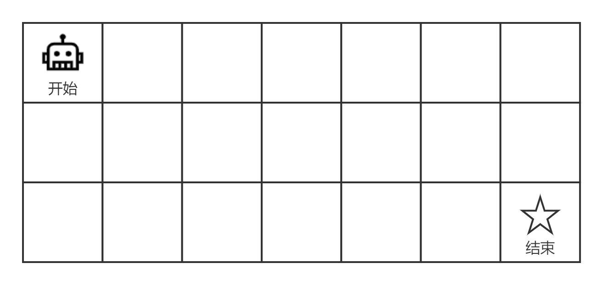
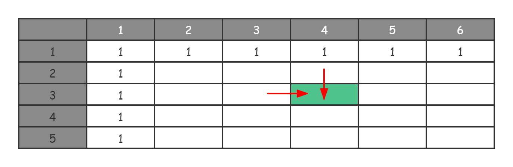
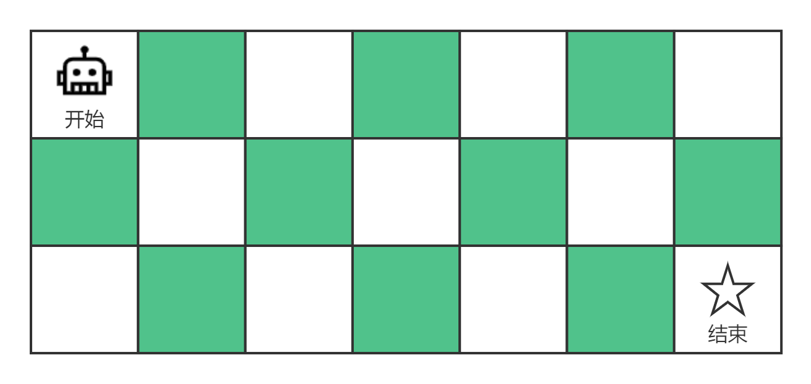

- 00 导读 动态规划问题纷繁复杂，如何系统学习和掌握它？.md.html
- 00 开篇词 为什么大厂都爱考动态规划？.md.html
- 01 硬币找零问题：从贪心算法说起.md.html
- 02 暴力递归：当贪心失效了怎么办？.md.html
- 03 备忘录：如何避免递归中的重复计算？.md.html
- 04 动态规划：完美解决硬币找零.md.html
- 05 面试即正义第一期：什么样的问题应该使用动态规划？.md.html
- 06 0-1背包：动态规划的Hello World.md.html
- 07 完全背包：深入理解背包问题.md.html
- 08 子数组问题：从解决动归问题套路到实践解题思路.md.html
- 09 子序列问题：详解重要的一大类动态规划问题.md.html
- 10 面试即正义第二期：常见的动态规划面试题串烧.md.html
- 11 动态规划新问题1：攻破最长递增子序列问题.md.html
- 12 动态规划新问题2：攻破最大子数组问题.md.html
- 13 动态规划算法设计的关键：最优子结构与状态依赖.md.html
- 14 面试即正义第三期：刷题指南，熟能生巧.md.html
- 15 课程回顾与总结（上）.md.html
- 16 课程回顾与总结（下）.md.html
- 加餐 买卖股票：常见且必考的动态规划面试题.md.html
- 结束语 在我家的后院养长颈鹿.md.html
- 捐赠
10 面试即正义第二期：常见的动态规划面试题串烧
你好，我是卢誉声。
在前面的课程中，我们使用动态规划解题模板（套路），解决了多种类型的动态规划算法问题。这其中包括背包问题、子数组问题和子序列问题等，它们绝大多数都属于求最优解（最大值和最小值）类型的问题。
除此之外，我们还需要掌握另外两大类型的动归问题，它们分别是求方案总数以及求可行性（True或False）。虽然这两类动归问题的提法不同，但我们仍然可以使用之前总结的动态规划解题模板（套路），只需稍作调整就可以了。
那这样的话，我们今天的课程目标也就非常清晰了，就是把这两类典型的动态规划问题弄明白。现在，就让从最简单的题目开始吧！
简单的路径规划
路径规划问题是十分常见的动态规划面试问题，这类问题通常都是模拟现实中的路径规划。一般来说，它会给你一个指定的图，以及与图相对应的约定条件，然后让你计算出路径的总数或最优路径等。我们一般把这种问题归类到求方案总数这一类别中。
现在，我们来看下最简单的路径规划问题。
算法问题分析
问题：一个机器人位于一个 m * n 网格的左上角 （起始点在下图中标记为“开始” ），机器人每次只能向下或者向右移动一步，现在机器人试图达到网格的右下角（在下图中标记为“结束”）。问总共有多少条不同的路径？

比如上图是一个7 * 3的网格，我们希望知道从起点到终点能有多少条不同的路径。
示例：
输入：m = 3, n = 2
输出： 3
解释: 从左上角开始，总共有 3 条路径可以到达右下角：
1. 向右 -> 向右 -> 向下
2. 向右 -> 向下 -> 向右
3. 向下 -> 向右 -> 向右
当遇到一个问题时，我们先要确定这个问题能否使用动态规划来进行求解，那就看一下该问题是否满足动归问题的三大特征吧。这个你应该非常熟悉了！
- 重叠子问题：显然，求方案总数必定涉及穷举，那么在穷举过程中就难以避免出现重叠子问题的计算。比如说，格子 (4, 3) 的路径数量和格子 (3, 4) 的路径数量肯定都会依赖于格子 (3, 3) 的路径数量。因此，如果我们要求格子 (3, 3) 的路径数量，那么在求解格子 (4, 3) 和格子 (3, 4) 的时候，就不需要进行重复计算了；
- 无后效性：然后判断该问题是否是无后效性的。由于我们的机器人只能向下或者向右走，因此格子的路径数量求解是单向的，所以子问题肯定是无后效性的；
- 最优子结构：由于这个问题中机器人每次只能向右或者向下走一步，因此如果要产生不同的路径肯定从当前格子的上方下来，或者从当前格子的左侧过来，所以第 (m, n) 个格子的路径数量就是第 (m-1, n) 个格子的路径数量加上第 (m, n-1) 个格子的路径数量，所以这里存在所谓的最优子结构。
通过以上判断，我们得知该问题可以利用动态规划思想来进行求解。
写出状态转移方程
现在，我们来看看如何写出该问题的状态转移方程。
参照我们已经反复使用过的解题模板，先要确定初始化状态。从原问题可以看出，初始化状态是网格的第一行和第一列。网格的第一行永远只能从左侧的格子往前走，第一列永远只能从上方的格子向下走。由于我们只能向右或向下走，因此，第一行和第一列的格子永远只能存在 1 条路径。
接着，确定状态参数。原问题的状态参数其实就是格子的行数和列数，只要知道行数 \(i\) 和列数 \(j\) 就能知道这个格子的路径数量。因此，我们得到两个状态参数，分别是代表行数的 \(i\) 和代表列数的 \(j\)。
那么，在确定了初始化状态和状态参数后，就要进行状态存储。这里我们的状态存储空间是一个二维数组 \(DP\[i\]\[j\]\)，表示第 \(i\) 行、第 \(j\) 列的路径数量。你可以通过以下图示加深理解。

从表格中我们可以看出，第一行和第一列是格子的序号。其中填写了 1 的格子，就是初始状态，深色的格子就是\(DP\[i\]\[j\]\)，表示第 \(i\) 行、第 \(j\) 列的路径数量。我们可以计算一下，这个格子的路径数量是 \(DP\[i-1\]\[j\] + DP\[i\]\[j-1\]\)。
现在一切就绪，我们来写状态转移方程。
\[DP(i, j)=\\left\\{\\begin{array}{c}- DP\[i-1\]\[j\] + DP\[i\]\[j-1\], & if \\ i\\ne0\\ or\\ j\\ne0 \\\\\\- 1, & i=0\\ and\\ j=0- \\end{array}\\right.\]
我们可以这么理解这个状态转移方程：它由初始状态和后续的状态转移构成。当 \(i\) 和 \(j\) 为 0 时（假定格子从 0 开始而不是 1 开始），函数结果就是 1；否则，就是 \(DP\[i- 1\]\[j\] + DP\[i\]\[j-1\]\)。
编写代码进行求解
对于这个简单的路径规划问题，我们可以用状态转移方程直接写出算法代码。
Java 实现：
int getPathCount(int m, int n) {
int[][] dp = new int[m][n];
// 初始化状态
for (int i = 0; i < m; i ++) { dp[i][0] = 1; }
for (int j = 0; j < n; j ++) { dp[0][j] = 1; }
for (int i = 1; i < m; i ++) { // 状态转移过程
for (int j = 1; j < n; j ++) {
dp[i][j] = dp[i - 1][j] + dp[i][j - 1];
}
}
return dp[m - 1][n - 1]; // 输出答案
}
C++ 实现：
int GetPathCount(int m, int n) {
int dp[m][n];
// 初始化状态
for (int i = 0; i < m; i ++) { dp[i][0] = 1; }
for (int j = 0; j < n; j ++) { dp[0][j] = 1; }
for (int i = 1; i < m; i ++) { // 状态转移过程
for (int j = 1; j < n; j ++) {
dp[i][j] = dp[i - 1][j] + dp[i][j - 1];
}
}
return dp[m - 1][n - 1]; // 输出答案
}
带障碍的路径规划
刚才讲到的路径规划问题，属于“简单”的路径规划，那在实际的面试中呢，往往不会那么简单。或者说，面试官会在你给出上述解答后，提高问题难度，然后再考察你的应变能力。
为了防止这种情况发生，同时也是学习动归必修的内容。现在，我们来看一看带障碍的路径规划问题该如何求解。
算法问题分析
问题：一个机器人位于一个 m * n 网格的左上角 （起始点在下图中标记为“开始” ）。机器人每次只能向下或者向右移动一步，现在机器人试图达到网格的右下角（在下图中标记为“结束”）。考虑网格中有障碍物，那么从左上角到右下角将会有多少条不同的路径？

网格中的障碍物和空位置分别用 1 和 0 来表示。
示例：
输入：
[
[0, 0, 0],
[0, 1, 0],
[0, 0, 0]
]
输出: 2
解释：3 * 3 网格的正中间有一个障碍物。
从左上角到右下角一共有 2 条不同的路径：
1. 向右 -> 向右 -> 向下 -> 向下
2. 向下 -> 向下 -> 向右 -> 向右
显然，这个问题要比前面的问题复杂一些，在网格中加入了障碍物这一要素，也就是说有些格子是无法通行的，那么这个时候应该如何求解呢？
我们静下心来仔细想想，其实这个问题并没有产生本质变化。待求的子问题还是第 (m, n) 格子的不同路径总数。唯一的区别在于，其中一些格子有障碍物，无法通行。因此，对这些格子来说，其路径总数就是 0。
所以，重叠子问题、无后效性和最优子结构跟上一个问题是相同的。
写出状态转移方程
虽然基本的子问题没变，但是由于问题产生了变化，因此状态转移方程肯定会有所改变。
首先，我们还是确定初始化状态。依然先考虑网格的第一行和第一列，第一行永远只能从左侧的格子往前走；第一列永远只能从上方的格子往下走。由于我们只能向右或向下走，所以第一行和第一列的格子永远只能存在 1 条路径。但是，我们还需要再考虑那些有障碍的格子，对这些格子来说，它们的路径总数应该是 0 而不是 1。
由于该问题的基本计算规则没有发生变化。因此，状态参数依然是格子的行数和列数，我们只要知道了行数 \(i\) 和列数 \(j\) 就能知道这个格子的路径数量。
同理可得，状态存储空间依然是一个二维数组 \(DP\[i\]\[j\]\)，表示第 \(i\) 行、第 \(j\) 列的路径数量。你可以参考上一个问题的表格，来加深对备忘录的理解。
好了，现在就是重头戏了，写出我们的状态转移方程。这个时候我们需要注意：对这些存在障碍的格子，它们的状态需要设为 0。为此，我们得到了以下状态转移方程：
\[DP(i, j)=\\left\\{\\begin{array}{c}- 1, & i=0\\ and\\ j=0\\ and\\ u(i,j)=0 \\\\\\- 0, & u(i,j)=1 \\\\\\- DP\[i-1\]\[j\] + DP\[i\]\[j-1\] & otherwise- \\end{array}\\right.\]
从公式中可以得知，u(i, j) 表示格子 (i, j) 的编码：1 为有障碍物，0 为无障碍物。因此，当 u(i, j) 为 1 的时候，\(DP\[i\]\[j\] = 0\)；否则的话，状态转移函数就跟上一个问题没有区别。
编写代码进行求解
写好状态转移方程后，我直接给出算法代码的实现。
Java实现：
int getPathCountWithBlocks(int[][] v) {
int m = v.length;
int n = v[0].length;
int[][] dp = new int[m][n];
// 初始化状态
for (int i = 0; i < m; i ++) { dp[i][0] = v[i][0] == 1 ? 0 : 1; }
for (int j = 0; j < n; j ++) { dp[0][j] = v[0][j] == 1 ? 0 : 1; }
for (int i = 1; i < m; i ++) { // 状态转移过程
for (int j = 1; j < n; j ++) {
if (v[i][j] == 1) {
dp[i][j] = 0;
} else {
dp[i][j] = dp[i - 1][j] + dp[i][j - 1];
}
}
}
return dp[m - 1][n - 1]; // 输出答案
}
C++实现：
int GetPathCount(const vector<vector<int>>& v) {
int m = v.size();
int n = v[0].size();
int dp[m][n]; memset(dp, 0, sizeof(dp));
// 初始化状态
for (int i = 0; i < m; i ++) { dp[i][0] = v[i][0] ? 0 : 1; }
for (int j = 0; j < n; j ++) { dp[0][j] = v[0][j] ? 0 : 1; }
for (int i = 1; i < m; i ++) { // 状态转移过程
for (int j = 1; j < n; j ++) {
if (v[i][j]) {
dp[i][j] = 0;
} else {
dp[i][j] = dp[i - 1][j] + dp[i][j - 1];
}
}
}
return dp[m - 1][n - 1]; // 输出答案
}
通过以上讲解，你会发现：即便原问题增加了障碍物，我们求解问题的基本思路也没怎么发生变化，只是在初始化状态时多考虑了一下有障碍物这种情况。
跳跃游戏
接下来我们看看求可行性问题（True或False），这是最后一类我们“可能”还未触及的动归问题。我为什么要说可能呢？这是因为我们完全可以通过问题的转化，将其他类型的问题转化成求可行性问题。
比如我们在早期讨论的硬币找零问题，当时我们要求的是：最少需要几枚硬币凑出总金额。但那个问题显然存在无法用硬币凑出解的情况（至于这种情况，原问题要求返回 -1）。因此，如果我们把原问题修改成：你能否用用最少的硬币凑出总金额？这样就变成了一个求可行性问题了。
当然，除了上述的情况外，有些面试题目也会直接提出求可行性的问题。对于这类问题，我们只需要知道某个问题是否可以被解决即可。既然说到这了，就让我们来看一下跳跃游戏这个常考的题目吧。
题目：给出一个非负整数数组 A，你最初定位在数组的第一个位置。数组中的每个元素代表你在那个位置可以跳跃的最大长度。判断你是否能到达数组的最后一个位置。
示例1：
输入：A = [2, 3, 1, 1, 6]
输出： True
解释: 我们可以先跳 1 步，从位置 0 到达位置 1, 然后再从位置 1 跳 3 步到达最后一个位置。
示例2：
输入：A = [4, 2, 1, 0, 0, 6]
输出： False
解释: 无论从开头怎么跳跃，你最多都只能到达位置 3 或位置 4，但这两个位置的最大跳跃长度是 0，所以你永远不可能到达最后一个位置。
算法问题分析
这个问题其实很简单，每个数字表示了跳跃距离的可能性，这就涉及到了排列组合的问题。因此，我们可以考虑使用穷举来解该问题。但显然穷举不是一个好的面试问题的答案，因此，我们考虑使用动态规划来进行求解。
我们就按照动态规划的解题套路来分析一下，先来判断该问题是否满足动态规划特征。
- 重叠子问题：这个问题肯定存在重叠子问题，比如求能否到达 \(i\) 和 \(i-1\) 这两个位置，那么肯定都需要确定 \(i-2\) 这个位置的答案。因此，必定存在重叠子问题；
- 无后效性：该问题明显也无后效性，只有后续的子问题依赖于前面的子问题；
- 最优子结构：该问题是否存在最优子结构呢？当我们在一个位置的时候，我们可以知道最远可以跳到什么位置。因此，如果我们想要知道能否到达位置 \(i\)，就需要逐个看前面的位置，判定能否从 \(i-1\)、\(i-2\)、\(i-3\) … 的位置跳到位置 \(i\) 上。然后，再看 \(i-1\) 这个位置是否能够到达，因此肯定存在最优子结构。
好了，判断过后我们知道这个问题可以使用动态规划的状态转移方程来进行求解。现在，让我们来看一看如何写出这个状态转移方程吧。
写出状态转移方程
首先，我们要考虑初始化状态。这个问题的初始化状态就是 0 这个位置。因为这个位置是出发点，因此肯定可以到达，所以我们可以将其初始化成 True。而对其他位置，则可以根据状态转移方程来计算得出。
接着，状态参数也比较容易看出，只有数组的位置是变化的，因此状态参数就是当前位置 \(i\)。
由于只有一个状态参数，因此我们可以使用一维数组 \(DP\[i\]\) 来表示能否从出发点到达位置 \(i\)。
那么，状态转移方程中的决策是什么呢？就像前面所说的，如果我们想要知道能否到达位置 \(i\)，就需要逐个看前面的位置，判定能否从位置 \(i-1\)、\(i-2\)、\(i-3\) … 跳到位置 \(i\) 上。然后，再看 \(i-1\) 这个位置是否能够到达。
通过以上分析，我们就可以给出状态转移方程的定义了。
\[DP\[i\]=\\left\\{\\begin{array}{c}- True, & i = 0 \\\\\\- (DP\[j\] = true)\\ and\\ (max(A\[j\]+j) \\geq i), & i \\ne 0\\ and\\ j < i \\\\\\- \\end{array}\\right.\]
编写代码进行求解
有了状态转移方程，求解代码也就不难了。按照惯例，我直接给出求解代码。
Java 实现：
public boolean canJump(int[] nums) {
int n = nums.length;
if (n <= 1) { return true; }
boolean[] dp = new boolean[n];
// 初始化状态
for (int i = 0; i < n; i++) { dp[i] = false; }
dp[0] = true;
for (int i = 1; i < n; i++) {
for (int j = 0; j < i; j++) { // j < i
if (dp[j] && j + nums[j] >= i) {
dp[i] = true;
break;
}
}
}
return dp[n - 1]; // 输出答案
}
C++ 实现：
bool canJump(vector<int>& nums) {
int n = nums.size();
if (n <= 1) { return true; }
bool dp[n]; memset(dp, 0, sizeof(dp));
dp[0] = true; // 初始化状态
for (int i = 1; i < n; i++) {
for (int j = 0; j < i; j++) { // j < i
if (dp[j] && j + nums[j] >= i) {
dp[i] = true;
break;
}
}
}
return dp[n - 1]; // 输出答案
}
课程总结
以上就是求方案总数类型问题，以及求可行性类型问题的解法了。
事实上，我们完全可以通过转化其它类型的问题，来得到求可行性类型的动态规划问题。比如说，在带障碍的路径规划中，我们求的是路径总数。但是，当我将题目改一下：问能否从起点移动到终点？这样就变成了求可行性的问题。
我们依然在遵循之前给出的动态规划解题模板来求解问题。首先，根据重叠子问题、无后向性和最优子结构来确定能否用动态规划解题。然后，再确定初始化状态、状态参数，接着确定状态存储数组（即备忘录），最终写出关键的状态转移方程。
一旦写出状态转移方程，我们的问题就解决掉一大半了。你可以按照这种思路，自己去尝试解决一些实际的面试问题，从而加深你对解题模板的利用和理解。过程中如果遇到困难，欢迎随时在留言区中提出。
课后思考
这节课我们学习了路径规划的解法，那么在带障碍的路径规划问题的基础上，我再为每条边设定一个长度（也就是不同格子之间行进的距离是不同的），此时该如何求出从起点到终点的最大长度呢？
欢迎留言和我分享你的答案，我会第一时间给你反馈。如果今天的内容对你有所启发，也欢迎把文章分享给你身边的朋友，邀请他一起学习！
© 2019 - 2023 Liangliang Lee. Powered by gin and hexo-theme-book.